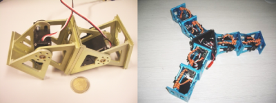

Ya están terminados los siguientes capítulos:
* Capítulo 1: Introducción. Presentación, objetivos y estructura del documento.
* Capítulo 8: conclusiones. Conclusiones y trabajos futuros
Precisamente la foto que he puesto es de los trabajos futuros, que en realidad son ya del presente. Se trata de los módulos GZ-I, que son de aluminio y llevan la electrónica integrada para poder hacer robots autónomos. Los estamos realizando en colaboración con la Universidad de Hamburgo, donde está Houxiang Zhang. Hasta ahora los tenía “apartados” porque tenía que terminar la tesis. Dentro de poco voy a poder meterme a saco con ellos 🙂
Todavía tengo que corregir erratas, depurar, traducir al inglés estos dos capítulos y terminar los apéndices. Pero ya me queda muy poco para terminar… al fin 😀
400 páginas!! Leo en la conclusiones el pie de pagina 401. ¿Es eso cierto? Madre mia!!
Enhorabuena! Ya nos avisaras que dia defiendes.
Un saludo!
Iñaki
Muchas felicidades por la cercana terminación de la tesis. He estado viendo las imágenes de los nuevos módulos y son ¡¡¡una pasada!!! ¡¡¡Yo quiero verlos en vivo!!! Tienen una pinta estupenda y encima autónomos, por fin tendremos auténticos gusanos sin cordón umbilical ;).
No voy a seguir flipándome que entonces no sé dónde puedo terminar :P.
De nuevo, felicidades.
Muchas gracias, pero yo hasta que no la lea no me lo creeré 😉
Sí, la tesis tiene unas 400 páginas, pero es debido a que he incluido muchos dibujos y el capítulo de experimentos está lleno de pantallazos y fotografías. Yo pienso en imágenes y por eso tiendo a incluir muchas.
Felicidades!!! Ya es sólo un último empujoncillo y te volveremos a tener en pleno apogeo friki!!! BIEEEENNNNN… creo que la sociedad Friki te necesita urgentemente!
Jjajajjjj… excelente !!! hay signos de innovación, creo que es la primera tesis que se atreve a incluir una cita de la pelicula Matrix. De todas formas, esa película es un hito.
A ver si podemos coincidir este sábado en la quedada de Madrid (arde) y comentamos posibles aplicaciones R&D en colaboración con distintas entidades, y también posibles juegos edutairnment (una guerra de serpentoides en realidad mixta) 😛
jjjajajaj sí, eso es toda una innovación. Me salió la vena friki y no lo pude evitar 😀